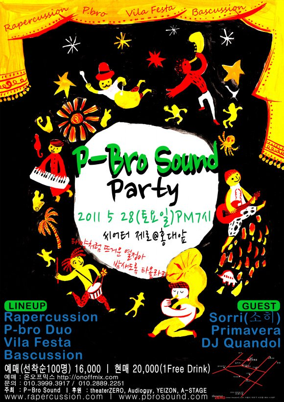
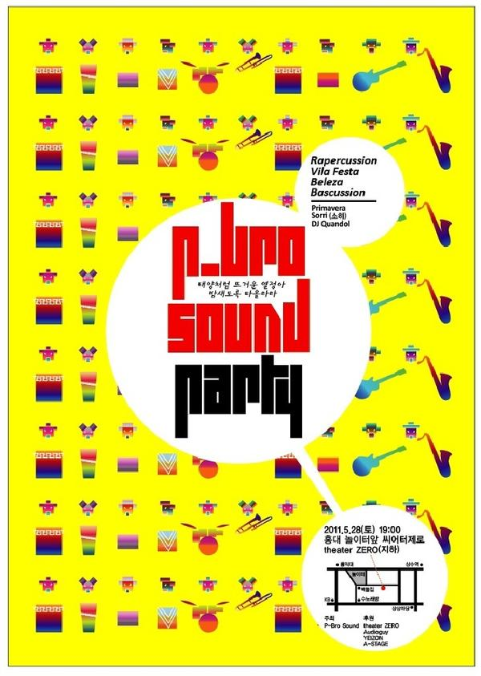
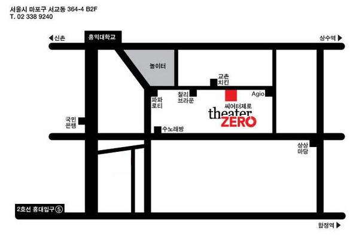

POSTS
P-Bro Sound Party에 Primavera 출연
예매는 http://onoffmix.com/event/3029 에서 ————————————- Rapercussion, Vila Festa, Bascussion, Beleza, P-Bro Duo 등 P-Bro Sound 의 가족들이 총 출동하는 자체기획파티!! 뜨거운 열정을 두드리고 기쁨이 넘치는 축제를 즐기고 싶은 모든 이들에게 선사하는 P-Bro Sound 의 선물 브라질에서 사랑받는 과거 Rapercussion 그리고 현대의 음악 Vila Festa, 최강 그루브 브라스 밴드 Bascussion의 강렬한 선율, 홍대외계인-재활용악기-야채악기 등 새로운 사운드와 재미를 안겨주는 P-Bro Duo 게스트로는 감미로운 브라질의 달콤함을 노래하는 Sorri(소희), 360 Sound의 퍼커셔니스트 이자 DJ를 겸하는 DJ Quandol, 삼바 파고지라는 우리에겐 낯설지만 파티엔 더 없이 제격인 장르를 선보여 줄 Primavera 가 함께 파티를 빛내 준다.   